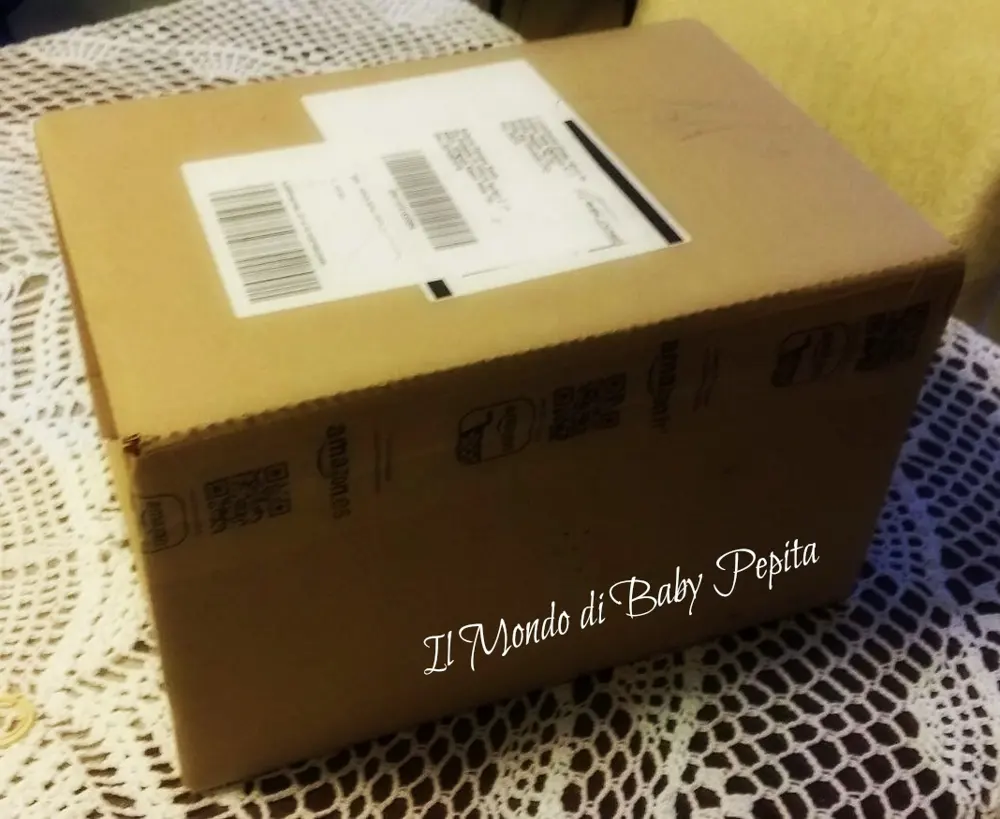
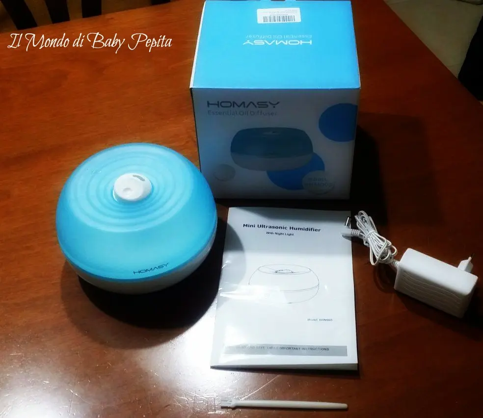
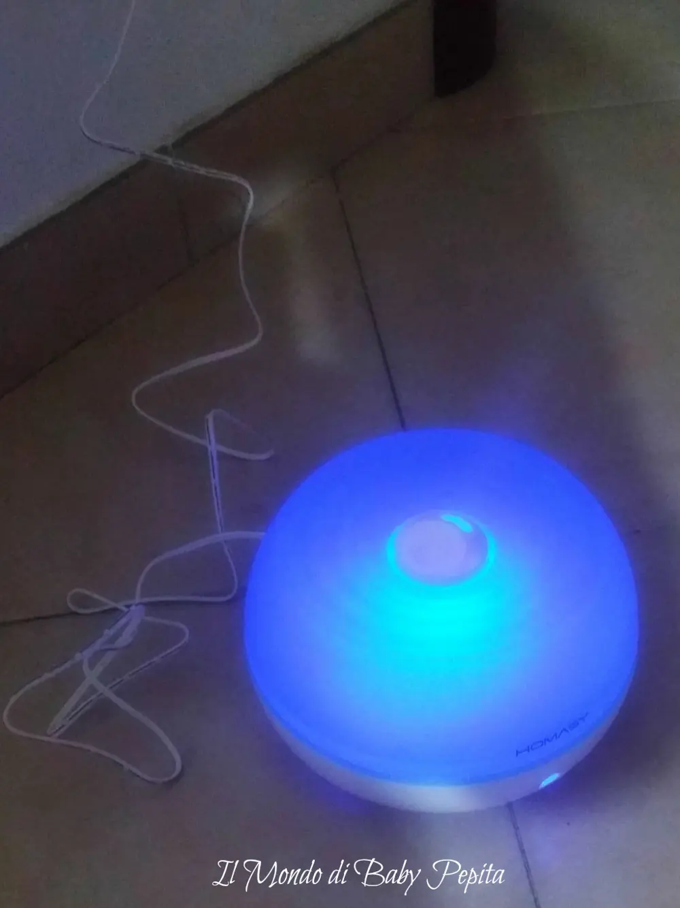
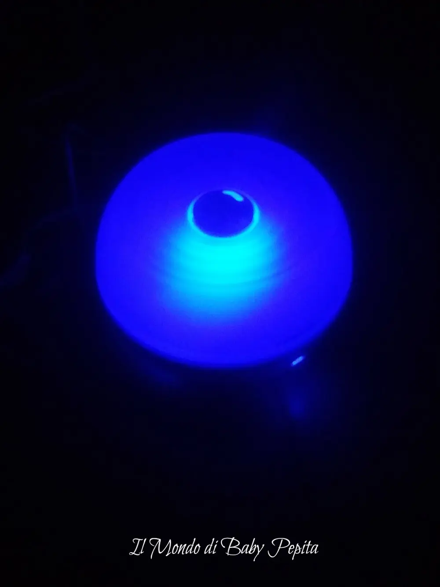

VicTsing - Umidificatore diffusore
Salve a tutti.
Oggi voglio recensire un prodotto per me nuovo grazie ancora al venditore VicTsing di Amazon, "un umidificatore ad ultrasuoni" con luce di notte molto atmosferica adatto sia per ufficio, che per Casa, ma anche per la camera da letto.

All'interno del pacco c'è il bellissimo diffusore, il caricabatteria, un pennellino per pulire e il libretto d'istruzioni.

E' facilissimo da usare basta sollevare il tappino bianco che si trova al centro e mettere dell'acqua dentro (volendo con qualche goccia di aroma per ambiente) poi collegare il cavo all'umidificatore e alla corrente e il gioco è fatto.
Quindi i passaggi sono:
1. Sollevare il coperchio.2. Inserire l'adattatore nella presa di corrente, collegandolo poi al diffusore.3. Aggiungere l'acqua (senza superare gli 800 ml).4. Aggiungere delle gocce di olio essenziale in verticale.5. Chiudere con il coperchio.6. Cliccare il bottone di accensione nella parte bassa, caratterizzato dal sigillo simbolico ON/OFF.
Riguardo le norme di sicurezza, oltre all'assicurarci di non aprire il coperchio durante l'attività (come di consuetudine), bisogna pulire la tanica con il pennellino in dotazione da eventuali residui di olio essenziale con la complicità di un panno inumidito.
Funziona benissimo e tiene l'aria di qualsiasi ambiente sempre fresco e pulito.
Ha sia la funzione di diffusore di olio essenziale e sia umidificatore. Quindi due cose in uno. è davvero molto bello nel design e funzionale in quello che fa.
Ha una capacità massima di 800 ml e ha ben 10 ore di autonomia.

Ha il controllo con il pulsante Touch, quindi semplicissimo.
Facile da controllare la luce nebbia nella notte con un pulsante a sfioramento. Con la possibilità di scegliere la direzione di fuoriuscita della nebbia, grazie al beccuccio rotabile.
Si spegnere automaticamente quando l'acqua finisce.
Le sue dimensioni sono:
- 17,8 x 17,4 x 16 cm e ha un peso di soli: 621 gr.

Personalmente non ho trovato problemi nel funzionamento, anche perchè è molto semplice l'unica accortezza che si deve avere e che viene anche descritta nel manuale d'istruzioni, bisogna posizionarlo ad un'altezza minima di 10 cm e ad una distanza dal muro onde evitare che possa cadere qualche gocciolina!E’ ottimo anche solo per profumare l’aria del nostro ambiente e grazie alla luce blu integrata, crea anche una bella atmosfera. (Luce che può essere spenta per non disturbare il sonno se l’umidificatore è posto all’interno di una camera da letto).
